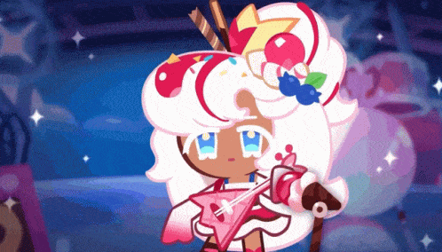
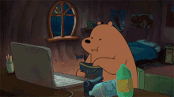

No momento, estou realizando o curso SENAI, que me permite escrever este arquivo neste momento.
Eu adoro jogos de passatempo com uma história interessante, que saibam explorar o visual e estética.

Meu jogo favorito é Genshin Impact, que possuí um visual incrível e história bem elaborada.
Também adoro Cookie Run Kingdom 🍪, um jogo de criação de reino e colecionar personagens.
Não tenho costume de assistir séries, então não conheço nenhuma. 😭
Já tenho alguns conhecimento sobre o uso do texto, como por exemplo: texto enfatizado!,
texto marcado, texto pequenininho,